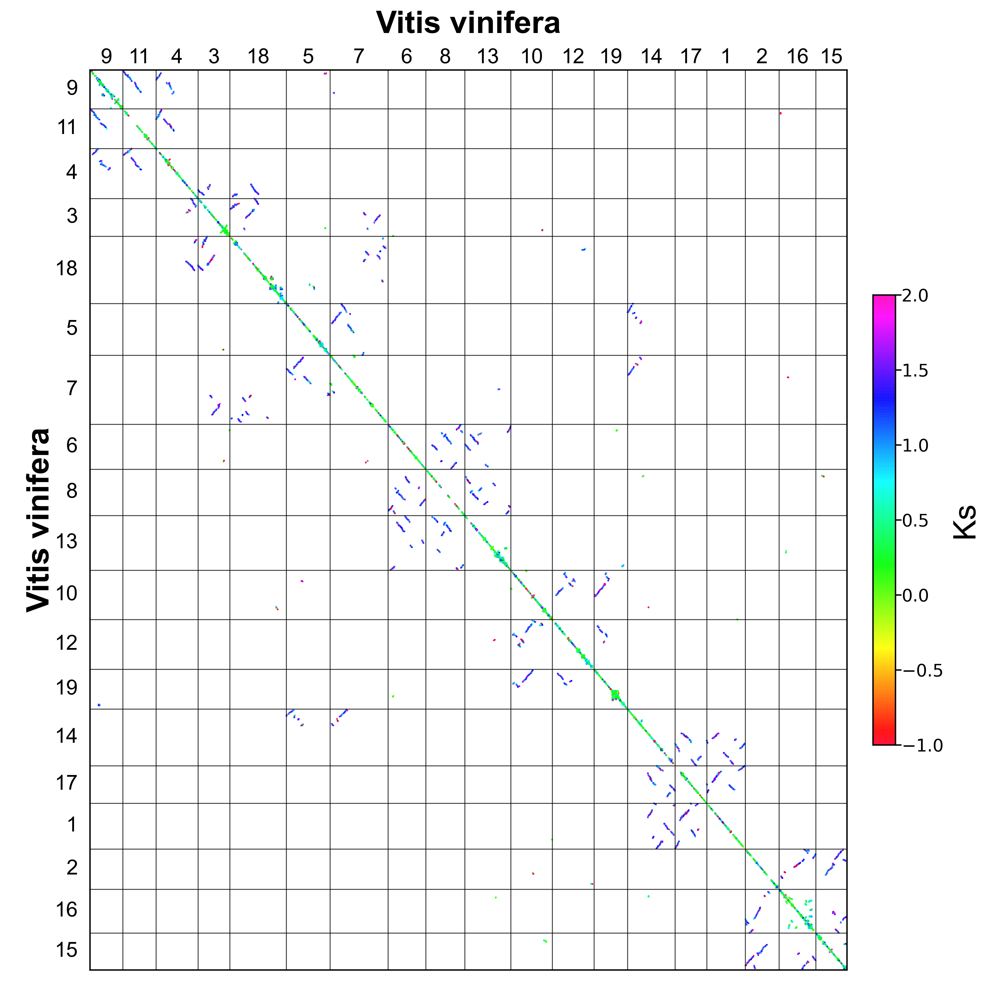

BlockKs¶
blockks is show Ks of blocks in a dotplot.
Parameters
Parameters |
Standards and instructions |
blockinfo |
Type: file | Default: - Output result of parameter bi |
pvalue |
Type: float | Default: 1 Evaluate the compactness and uniqueness of collinear blocks, the range is 0-1, the better collinearity range is 0-0.2. |
tandem |
Type: bool | Default: false Whether to display the collinearity block that may be generated by tandem. |
tandem_length |
Type: int | Default: 200 If tandem=true, the maximum range of tandem influence. |
area |
Type: str Default: -1,3 Show the range of ks. |
block_length |
Type: int | Default: 5 Show the minimum length of a collinear block. |
position |
Type: {order, start , end } | Default: order The position of a gene corresponds to the gff file. |
markersize |
Type: float | Default: 0.5 The size of the point in the plot. |
figsize |
Type: int,int | Default: 10,10 Control the proportion of the size of the saved picture. |
savefig |
Type: {*. png,*. pdf} | Default: *. png Save pictures support png, pdf, svg formats. |
Use command to enter the folder wgdi -bk ? > blockks.conf Take out the parameter file.
[blockks]
lens1 = lens1 file
lens2 = lens2 file
genome1_name = Genome1 name
genome2_name = Genome2 name
blockinfo = block information
pvalue = 0.05
tandem = true
tandem_length = 200
markersize = 1
area = 0,2
block_length = minimum length
figsize = 8,8
savefig = save image
Quick start
After the parameters are modified properly, then run wgdi -bk total.conf
Example
The original results are easily accessible at wgdi-example
